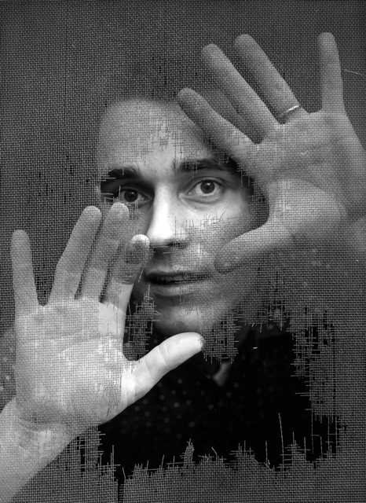
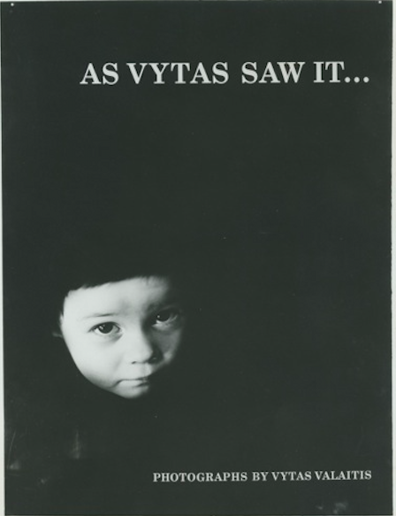

Vytas Valaitis

Lithuanian born, Vytas Valaitis came to the United States after World War II. He received his B.A. in photography from Ohio University in 1959. Vytas was a member of the photographic staff of NEWSWEEK and PIX Publishing, a New York City photo bureau that supplied news and feature photos to magazines, especially LIFE and later Sports Illustrated, before becoming a freelance photographer. He took important portraits of Pablo Casals and the Kennedy family, among other celebrities. Part of those photographs are shown in this gallery.

The father of three daughters, Vytas met his ultimely death at age 34 on October 4th, 1965. He died in a motorcycle accident in New York City as he was preparing to cover Pope Paul VI's visit. He was a talented and highly respected photographer, according to the Saturday Evening Post.
The Yale University Library has his work in their collection. His work was published in the 1961, 1962 and 1966 Photography Annual, published by Popular Photography.
His three daughters still live in New York. Gina, pictured below, has taken on her father's love of photography. Her daughter, Vytas' granddaughter, Maya, created this website.
All photographs taken by Vytas Valaitis.